Geologic Map
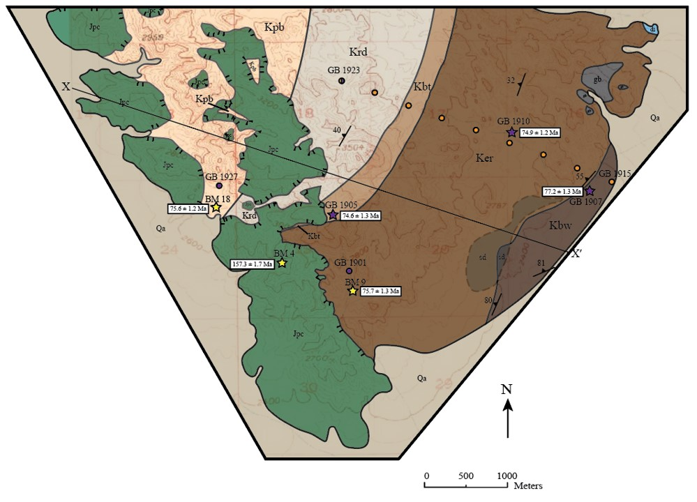
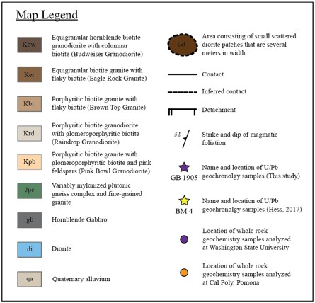
Rock Units
Budweiser Granodiorite (Kbw)
Equigranular hornblende biotite granodiorite with columnar biotite and sphene
The southeastern most unit
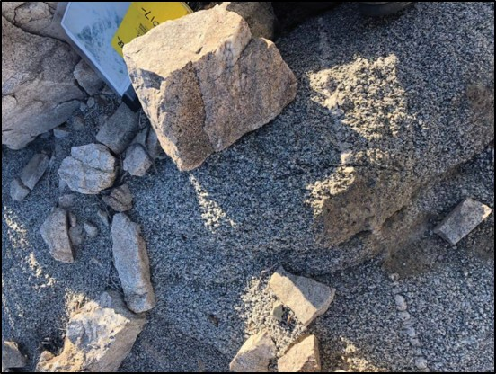Eagle Rock Granite (Ker)
Equigranular biotite granite with flaky biotite
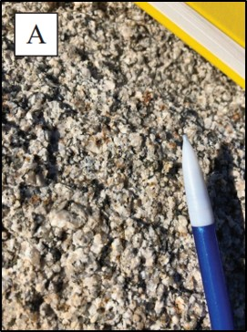 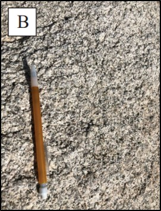Brown Top Granite (Kbt)
Porphyritic biotite granite with flaky biotite
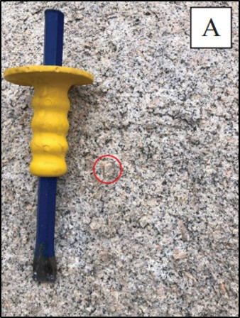 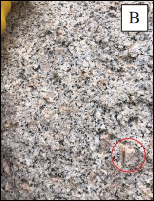Raindrop Granodiorite (Krd)
Porphyritic biotite granodiorite with glomeroporphyritic biotite
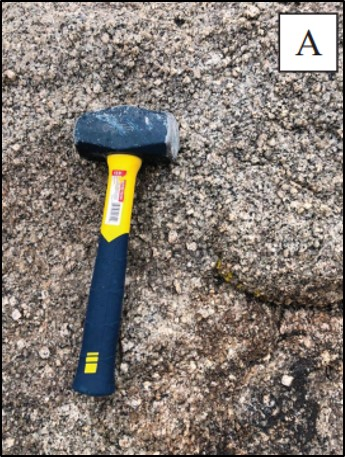 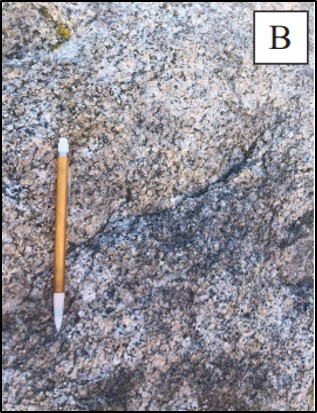Pink Bowl Granodiorite (Kpb)
Porphyritic biotite granodiorite with glomeroporphyritic biotite and large pink phenocrysts
The northwestern most unit
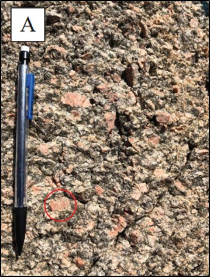 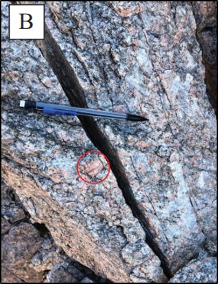